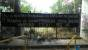
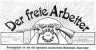
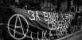
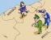
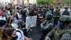
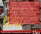

Upcoming EventsNo upcoming events.
|
argentina/uruguay/paraguay / género Tuesday January 05, 2021 23:06 byFAR – OAC – OAT
La marea verde que hace años no para de crecer en Argentina y en América Latina ayer pudo celebrar la aprobación de la Ley de Interrupción Voluntaria del Embarazo. Se trata de una reivindicación muy sentida para todas las mujeres y cuerpos gestantes de nuestra clase, ya que somos las más pobres quienes abortamos en las peores condiciones de clandestinidad, arriesgando nuestros cuerpos a los graves problemas de salud, a la cárcel y a la muerte. Esta lucha histórica tiene luz verde para que la fuerza de las de abajo en todo el continente avance en los derechos fundamentales para vivir, y no solo para sobrevivir como lo impone la maquinaria del capitalismo y su voracidad destructiva. Éste 30 de diciembre a la madrugada finalmente el Senado argentino tuvo que dar la aprobación definitiva a la ley de la Interrupción Voluntaria del Embarazo luego de años de presión social ejercida por el movimiento feminista, partidos políticos, sindicatos, organizaciones sociales y estudiantiles; Así como por el conjunto de mujeres y cuerpos gestantes, en las calles, en los históricos Encuentros Nacionales de Mujeres, hoy Plurinacionales de mujeres, lesbianas, trans, travestis y no binaries, como en cada espacio de trabajo, en cada lugar de estudio, en cada territorio, dando el debate y la pelea por la autonomía de nuestros cuerpos y nuestro derecho a decidir.[Português]
yunanistan / türkiye / kıbrıs / miscellaneous Sunday December 20, 2020 21:16 byDevrimci Anarşist Faaliyet
İktidar Covid19 önlemleri adı altında ucu açık ve anlaşılmaz yasaklar açıkladı. Salgın süreci boyunca göstermelik önlemleri uygulayan iktidar gerçekçi önlemleri uygulamadı. Önlemleri fakir ve zengin yaşamını ayrıştırarak uyguladı. Bu ayrıştırma sadece ekonomik değildi, tarafı olduğu kültürel kesimleri kayırmasıyla sosyal bir ayrıştırmaya da dönüştü. Başkanın açıkladığı son salgın yasaklarında da bu açıkça ortadadır. Atölyelerde, fabrikalarda, inşaatlarda işçiler çalışıyorken patronlar izolasyonlarını sürdürmekteler. Kahvehaneler ve kıraathaneler kapanıyorken AVM’ler açık kalıyor, dip dibe yapılan ibadetler sürüyor. Bunlar bize, yapılan bu ayrıştırmayı apaçık göstermektedir. Bu yasakların Covid19 ile alakası yoktur. Yasaklar, krizle karşı karşıya kalan toplumun kontrolünü sağlamak ve krizi anlaşılamaz, algılanamaz kılarak saklama çabasının bir ürünüdür. [English]
bolivia / peru / ecuador / chile / represión / presos Saturday December 12, 2020 00:21 byVários organizaciones anarquistas
“La prisión no impide que los actos antisociales se produzcan; por el contrario, aumenta su número. No mejora a los que van a parar a ella. Refórmesela tanto como se quiera, siempre será una privación de libertad, un medio ficticio como el convento, que torna al prisionero cada vez menos propio para la vida en sociedad. No consigue lo que se propone. Mancha a la sociedad. Debe desaparecer” (Piort Kropotkin – “Las Prisiones”) “Que los compañerxs no se sientan solxs. La gente con la que compartieron alegrías y tristezas, fracasos y victorias, están más que nunca junto a ellxs. Peleando con terco fervor. Sintiendo cada día más amor y más odio. Ese amor y ese odio con el que, juntxs, haremos cambiar el mundo de bases” (Juan C. Mechoso – Acción Directa Anarquista: Una Historia de FAU”) [Français] [Deutsche] [Ελληνικά] [Italiano] [English] [Català] [Português]
bolivia / peru / ecuador / chile / miscellaneous Tuesday November 24, 2020 03:21 byFranz Verne
Es claro que esta siempre fue una disputa interburguesa, entre dos facciones de derecha, cada cual representando sus propios intereses y agendas políticas. Y en esta contienda perdió el que tuvo menos respaldo estratégico. La caída de Vizcarra demuestra un Ejecutivo debilitado y carente de gobernabilidad, pues —entre otras cosas— nunca tuvo una bancada parlamentaria que lo respalde y frene las arremetidas del Legislativo que sí logró consensuar su ataque en bloque bajo la desgastada argucia de la «lucha anticorrupción», cuando siempre estuvo claro que en ambos poderes del Estado el nivel de putrefacción es realmente alarmante. Ahora, con la toma del poder de Manuel Merino, quien está abocado a convocar un gabinete ministerial acorde a sus socios parlamentarios, empieza una nueva repartija del poder, que no quepa ninguna duda.
west africa / community struggles Thursday November 12, 2020 17:33 byShawn Hattingh
A video went viral on social media platforms on October 3, outlining how the notorious Special Anti-Robbery Squad (SARS) unit of the Nigerian police force shot a young man, dumped him at the side of the road and stole his car. What followed was three weeks of protests by young people against such police brutality and the corruption that defines the state; initially via social media, #EndSARS, and later in towns and cities across Nigeria. During these protests the Nigerian state used various tactics to either suppress the protests or to try and demobilise them through insincere “concessions”. To begin with, the ruling class, the state it controls and its head, President Muhammadu Buhari, attempted to quell the protests through window dressing. Inspector General of Police Mohammed Adamu promised on October 11 that the SARS unit would be disbanded and supposedly replaced with a new unit called SWAT (Special Weapons and Tactics). This was an obvious lie, as the same personnel that formed part of SARS would form part of SWAT. Over the last several years the government has made similar announcements resulting in no actual change. Needless to say, the protests continued and grew into the largest in the history of Nigeria. As the protests grew, the state changed tactics and responded to the escalation with outright violence. Part of this involved the state deploying thugs to attack protestors in order to try and intimidate people off the streets. When this failed to produce the state’s desired result, it deployed the military and implemented a curfew in a number of cities. By October 20, however, the protests had spread across Nigeria. Some of the assets of the Nigerian ruling class were also targeted during these protests and the largest and most lucrative toll road in country, Lekki, in Lagos, was blockaded. On that day the military attempted to brutally end the protests and shot dead 12 people at the Lekki tollgate. |
 George Floyd: one death too many in the “land of the free” Wed 03 Feb, 22:35






|
 make this your Anarkismo.net front page
make this your Anarkismo.net front page


|

{kind=link}
{kind=link}
{kind=link}
{kind=link}
{kind=link}